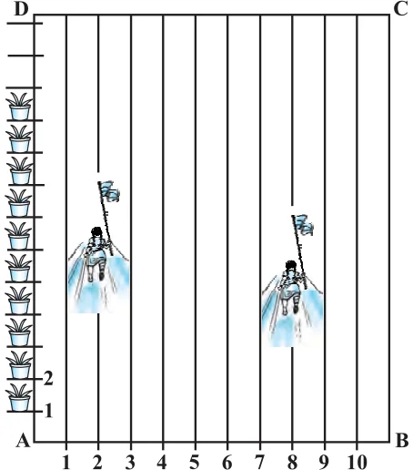

EXERCISE
- 2.Find the coordinates of the points of trisection of the line segment joining (4, \(- 1)\)
and ( \(- 2\), \(- 3)\).
- 3.To conduct Sports Day activities, in

your rectangular shaped school ground ABCD, lines have been drawn with chalk powder at a distance of 1m each. 100 flower pots have been placed at a distance of 1m from each other along AD, as shown in Fig. 7.12. Niharika runs \(\frac{1}{4}\) th the
distance AD on the 2nd line and
posts a green flag. Preet runs \(\frac{1}{5}\) th the distance AD on the eighth line and posts a red flag. What is the distance between both the flags? If Rashmi has to post a blue flag exactly halfway between the line segment joining the two flags, where should she post her flag? Fig. 7.12
- 4.Find the ratio in which the line segment joining the points ( \(- 3\), 10) and (6, \(- 8)\) is divided
by ( \(- 1\), 6).
- 5.Find the ratio in which the line segment joining A(1, \(- 5)\) and B( \(- 4\), 5) is divided by the
x-axis. Also find the coordinates of the point of division.
- 6.If (1, 2), (4, y), (x, 6) and (3, 5) are the vertices of a parallelogram taken in order, find
x and y.
- 7.Find the coordinates of a point A, where AB is the diameter of a circle whose centre is
(2, \(- 3)\) and B is (1, 4).
- 8.If A and B are ( \(- 2\), \(- 2)\) and (2, \(- 4)\), respectively, find the coordinates of P such that
\(AP = \frac{3}{7} AB\) and P lies on the line segment AB.
- 9.Find the coordinates of the points which divide the line segment joining A( \(- 2\), 2) and
B(2, 8) into four equal parts.
- 10.Find the area of a rhombus if its vertices are (3, 0), (4, 5), ( \(- 1\), 4) and ( \(- 2\), \(- 1)\) taken in
order. [Hint : Area of a rhombus \(= \frac{1}{2}\) (product of its diagonals)]